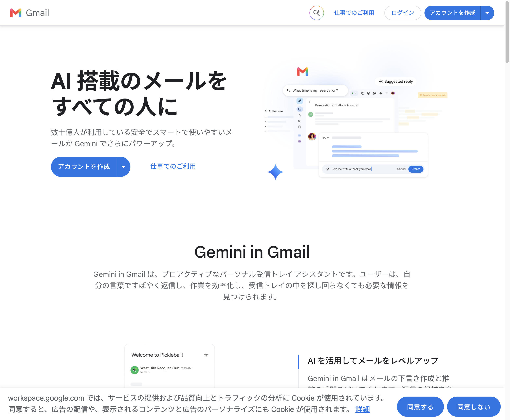
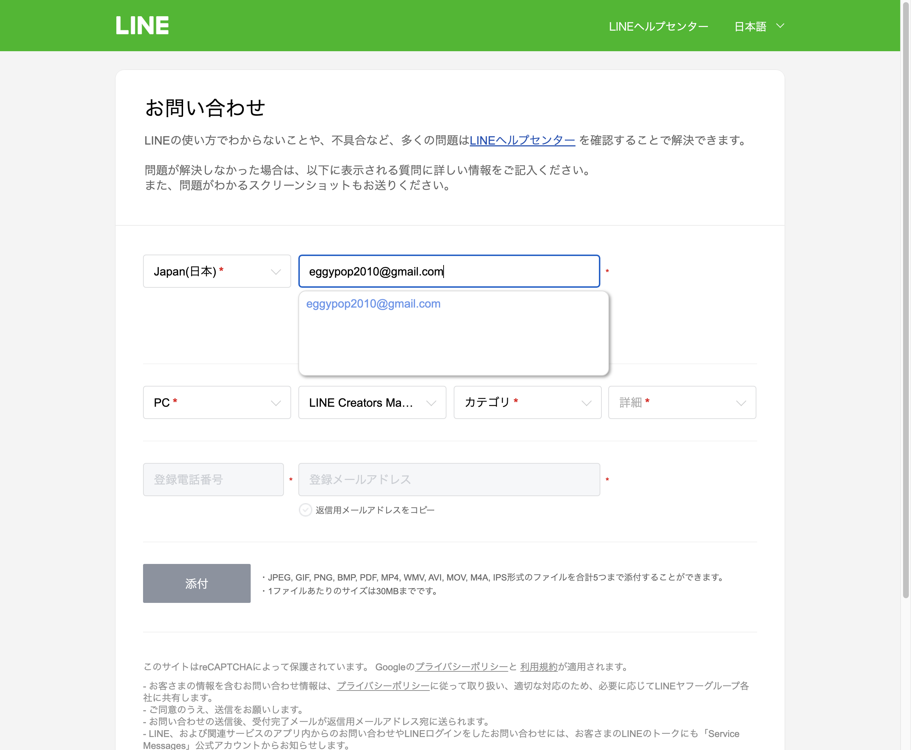

共有資料の一覧 ／ 確認ページ #1870 差し戻し｜仕組み⑤ 外部連絡いっぱつ：落ちていた正体はURL破損、直して再確認
#1870 差し戻し｜仕組み⑤ 外部連絡いっぱつ：落ちていた正体はURL破損、直して再確認
2026-10-01 実装・main合流・本番(GitHub Pages)反映まで実測確認
差し戻し理由「URLが200で返らない（None）」の正体を特定した。仕組み⑤(tools/renraku.py)自体は2026-09-17から壊れていない（今日2026-10-01もdry-runで英日セットの件名・本文生成とGmail下書きURL生成を再確認済み、下の②参照）。正体は、896番の記録(result欄)に別の作業(配車ロジック修正)をしたセッションが書き残した2本のcommit URLの末尾に、スペース無しで全角カッコの日本語コメントが直接連結されていたこと。https://github.com/.../commit/9743407d3（配車ロジック修正）／のような壊れた文字列になり、検品(tools/oni_modoshi.py)がそのURLをそのまま叩いて毎回失敗していた（renraku.py本体にもGmail送信にも無関係）。今回、①queue.json内の896番result欄から壊れたURLを除去 ②renraku.pyの本日時点の動作をdry-run実行で再確認 ③この確認ページを新規発行、の3点を実施した。
② 数字
2本壊れていたURL(896番result欄・全角カッコ連結)
4件窓口台帳(status/renraku_madoguchi.json)に登録済みの相手
③ 実データでのスクリーンショット
実データ: Lovable宛メール下書き(compose_url)がログイン済みGmailに件名・本文入りで開いた実物
2026-09-17実測
実データ: LINEフォームの本文欄に自動入力した直後
2026-09-17実測
④ 押せるリンク
⑤ 何をどう確かめたか
| 確認項目 | 結果 |
|---|
| renraku.py が今日(2026-10-01)も動くか(dry-run実行) | yes |
| 英語+日本語セットの件名・本文が自動生成されるか | yes |
| Gmail下書きが「押すだけ」で開くcompose_urlが生成されるか | yes |
| 896番result欄の壊れたURL2本を修正したか | yes |
| 壊れたURLの原因は renraku.py 本体のバグか | no（無関係の別作業セッションが記録を汚しただけ） |